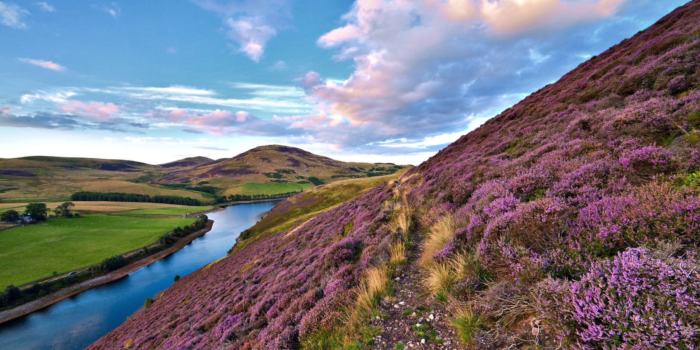

Mountain climbing
Experience the thrill of mountain peaks worldwide.
× >
>
Mountaineering, or mountain climbing, is the sport of reaching, or trying to reach, high points in mountainous areas, mainly for the joy and thrill of the climb. The sport involves intense physical activity. It includes hiking, rock climbing, and traversing slopes covered with ice and snow. Climbers test their skills, strength, balance, resourcefulness, courage, and endurance as they master hazardous conditions and difficult terrain. Many also gain satisfaction from experiencing the grandeur of nature.
Mount fuji

Mount Fuji, highest mountain in Japan. It rises to 12,388 feet (3,776 metres) near the Pacific Ocean coast in Yamanashi and Shizuoka ken (prefectures) of central Honshu, about 60 miles (100 km) west of the Tokyo-Yokohama metropolitan area. It is a volcano that has been dormant since its last eruption, in 1707, but is still generally classified as active by geologists. The mountain is the major feature of Fuji-Hakone-Izu National Park (1936), and it is at the centre of a UNESCO World Heritage site designated in 2013.
Lonavala

Lonavala railway station is a railway station in Lonavala, a hill station in the state of Maharashtra in India. Lonavala station is the origin of Lonavala–Pune Suburban Trains. 17 suburban trains operate on the Pune–Lonavala route. Lonavala is also a halt for Mumbai–Pune Express and Mail trains. The Karjat–Pune passenger train also has a halt at Lonavala. Trains traveling on the Kalyan–Pune route also halt at Lonavala. This station leads access to Lonavala town and nearby areas like Karla Caves, Bhaja Caves, Lohagad, Visapur Fort, Bhushi Dam and Bhor Ghat (Khandala Ghat). Khandala hill station is just 8 kilometres (5.0 mi) from Lonavla
Tiger hill

Tiger Hill is eminently known for its splendid sights of the early morning sunrise where you can witness a panoramic view of Mount Everest and Mount Kanchenjunga together. It lies at an altitude of 2590 meters and at a distance of 13 kilometres away from Darjeeling. The wonderful view of snow-capped mountains sitting among cotton clouds draws in tourists to Tiger Hill from throughout the country. Surprisingly, this is also the summit of Ghoom, which is the highest railway station in the Darjeeling Himalayan Train, a UNESCO Globe Heritage Site.
Kangchenjunga
 >
>
Kangchenjunga, also spelled Kanchenjunga, Kanchanjanghā and Khangchendzonga, is the third-highest mountain in the world. Its summit lies at 8,586 m (28,169 ft) in a section of the Himalayas, the Kangchenjunga Himal, which is bounded in the west by the Tamur River, in the north by the Lhonak River and Jongsang La, and in the east by the Teesta River. It lies in the border region between Koshi Province of Nepal and Sikkim state of India, with the two peaks West and Kangbachen in Nepal's Taplejung District and the other three peaks Main, Central and South directly on the border.
Ama Dablam
 >
>
Ama Dablam is a mountain in the eastern Himalayan range of Koshi Province, Nepal. The main peak is 6,812 metres (22,349 ft), the lower western peak is 6,170 metres (20,243 ft). Ama Dablam means "mother's necklace"; the long ridges on each side like the arms of a mother (ama) protecting her child, and the hanging glacier thought of as the dablam, the traditional double-pendant containing pictures of the gods, worn by Sherpa women.[3] For several days, Ama Dablam dominates the eastern sky for anyone trekking to Mount Everest Base Camp. For its soaring ridges and steep faces Ama Dablam is sometimes referred as the "Matterhorn of the Himalayas."[4] The mountain is featured on the one rupee Nepalese banknote
Pentland
>The Pentland Hills rise immediately to the south of Edinburgh and provide excellent hillwalking within easy reach of the city. Allermuir Hill provides superb views of the capital whilst further into the range there is wonderful ridge-walking along Carnethy Hill, Scald Law and the Kips. Away from these most popular locations the Pentlands still provide some quiet corners with plenty of room for exploration. North of the Pentlands is West Lothian. At first glance the attractions of walking here as less obvious, but there are many hidden gems. The coastline of the Firth of Forth provides some fine routes, often with views of the iconic Forth Rail Bridge, whilst inland the attractions range from historic Linlithgow Palace to country parks such as Beecraigs, Almondell and Calderwood.
Gasherbrum
>Gasherbrum is a remote group of peaks situated at the northeastern end of the Baltoro Glacier in the Karakoram mountain range. The peaks are located within the border region of Gilgit-Baltistan, Pakistan and Xinjiang, China. The massif contains three of the world's 8,000 metre peaks (if Broad Peak is included). The highly visible face of Gasherbrum IV has gained the nickname the "Shining Wall" and this has often been claimed as the meaning of the word "Gasherbrum". [1] However the name Gasherbrum comes from "rgasha" (beautiful) + "brum" (mountain) in Balti, hence it actually means "beautiful mountain".[2]
Imja Tse
 >
>
Imja Tse, also known as the Island Peak, is located in the Sagarmatha National Park of the Himalayas in the Eastern Development Regions of Nepal. The name Island Peak was named in 1953 by members of British Mount Everest expedition as it appeared like an island in the sea of ice when viewed from Dingboche. The peak was renamed Imja Tse in 1983, however, the initial name “Island Peak” has remained popular among the summiteers.
Manaslu
>Mount Manaslu, also known as Kampunge is the eighth highest mountain in the world. It is located in the west-central part of Nepal. Manaslu in Sanskrit means “manasa” meaning “Intellect” or “soul”. The peak elevates to a height of 8,163 m. Manaslu lies in Thoche, Dharapani and Samagaun Village Development Committee of Manang and Gorkha Districts in the Western Development Region of Nepal. It is open for expeditions. It takes approximately 65 days to climb Manaslu Peak. A drive to Dhadingbesi or a drive to Gorkha are the two entry points for Manaslu Peak. Toshio Imanishi and Gyaltsen Norbu Sherpa were the first to successfully ascend this peak on 9 May 1956. Caravan route: There are two caravan routes for Manaslu Peak. The first begins from Gorkha to Khanchok to Deurali to Gumda to Jagat to Philim to Bihi to Namrung to Samagaun and finally to the Base Camp.
Zermatt
>Zermatt is one of the most famous mountain resorts in Switzerland, and attracts people from around the world. Located in the German-speaking part of Valais, its most popular sight is the iconic Matterhorn, one of Switzerland's most famous mountains. It comes at no surprise then that the town of Zermatt caters mostly towards skiing, hiking and mountaineering. Though its fame has also a downside, the town is busier and much more expensive than other destinations in the region
Stubai Hohenweg
 >
>
The Stubai Valley or Stubaital is an alpine valley in Tyrol, Austria. It is the central valley of the Stubai Alps. The river Ruetz flows through the valley. This 35-km long valley runs in northeastern direction from the main chain of the Alps to Schönberg im Stubaital, near Innsbruck. Below Fulpmes, the villages lie on terraces above the Ruetz on either side of the river. South of Neustift im Stubaital, the largest side valley Oberbergtal joins from the west. The ÖBB operates a 16-MW hydroelectric power plant in Fulpmes.
Svalbard
>Svalbard, archipelago, part of Norway, located in the Arctic Ocean well north of the Arctic Circle. The islands lie between longitude 10° and 35° E and latitude 74° and 81° N, about 580 miles (930 km) north of Tromsø, Norway. The archipelago is composed of nine main islands: Spitsbergen (formerly West Spitsbergen), North East Land, Edge Island, Barents Island, Prins Karls Foreland, Kvit Island (Gilles Land), Kong Karls Land (Wiche Islands), Bjørn (Bear) Island, and Hopen. The total area of Svalbard is 24,209 square miles (62,700 square km). Spitsbergen, the largest island, is 15,075 square miles (39,044 square km).
Rakaposhi
>Rakaposhi, standing at 7,788 meters (25,551 feet), is a majestic mountain in the Karakoram range of Pakistan, located in the Nagar Valley, about 100 km north of Gilgit. Its name, meaning “shining wall” in the local language, aptly describes its grandeur. Also referred to as Rakaposhi Peak or Rakapushi and Dumani (“Mother of Mist”), it ranks as the 27th highest in the world and the 12th highest in Pakistan. Despite its ranking, Rakaposhi is renowned for its stunning beauty, often considered one of the most picturesque mountains globally.
Tirich mir
>Rising 7,707 meters above sea level, Tirich Mir is the highest mountain located in the Hindu Kush mountain range. It is situated in Chitral, Khyber-Pakhtunkhwa, Pakistan. In 1950, a Norwegian expedition team first scaled the peak, which overlooks Chitral. You can get beautiful glimpses of the peak from Chitral’s main market. Tirich Mir gets its name from the village Tirich where the peak is located. The Khowar speaking people of the village are highly hospitable and always available to lend you a helping hand in your expedition endeavor. The route to Tirich Mir is very risky, providing an opportunity for extreme adventure lovers to put their dexterity and passion to the test. Some local legends suggest that Tirich Mir is a kingdom of Djinns, fairies, wizards and witches who wouldn’t let human beings into their area.